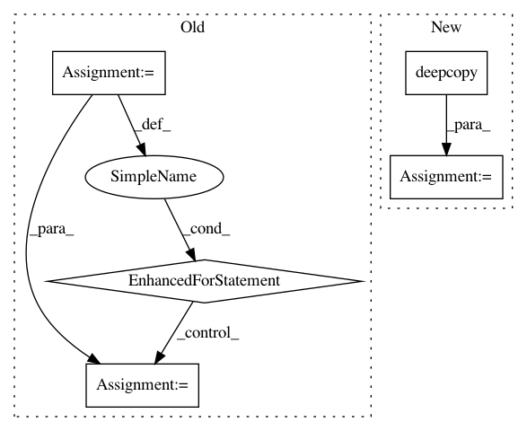

925ec7452d158af56eee58540d8211c31511fd5b,autokeras/nn/graph.py,Graph,_insert_pooling_layer_chain,#Graph#Any#Any#,500
Before Change
def _insert_pooling_layer_chain(self, block_last_layer_input_id, conv_block_input_id):
skip_output_id = conv_block_input_id
for kernel_size, stride, padding in self._get_pooling_layers(conv_block_input_id, block_last_layer_input_id):
skip_output_id = self.add_layer(get_pooling_class(self.n_dim)(kernel_size,
stride=stride,
padding=padding), skip_output_id)
skip_output_id = self.add_layer(StubReLU(), skip_output_id)
return skip_output_id
def extract_descriptor(self):
After Change
filters = self.node_list[start_node_id].shape[-1]
new_layer = get_conv_class(self.n_dim)(filters, filters, 1, layer.stride)
else:
new_layer = deepcopy(layer)
skip_output_id = self.add_layer(new_layer, skip_output_id)
skip_output_id = self.add_layer(StubReLU(), skip_output_id)
return skip_output_id
In pattern: SUPERPATTERN
Frequency: 3
Non-data size: 5
Instances
Project Name: keras-team/autokeras
Commit Name: 925ec7452d158af56eee58540d8211c31511fd5b
Time: 2018-11-28
Author: jhfjhfj1@gmail.com
File Name: autokeras/nn/graph.py
Class Name: Graph
Method Name: _insert_pooling_layer_chain
Project Name: keras-team/keras
Commit Name: 15a3a1f1ce2a7babf62c61f73709c074249ed840
Time: 2015-07-30
Author: francois.chollet@gmail.com
File Name: keras/utils/layer_utils.py
Class Name:
Method Name: container_from_config
Project Name: OpenMined/PySyft
Commit Name: 59d4bbaaf06850e2dfb357855f50b05f6c9aadb1
Time: 2020-10-02
Author: skywind29@users.noreply.github.com
File Name: syft/frameworks/torch/fl/utils.py
Class Name:
Method Name: federated_avg